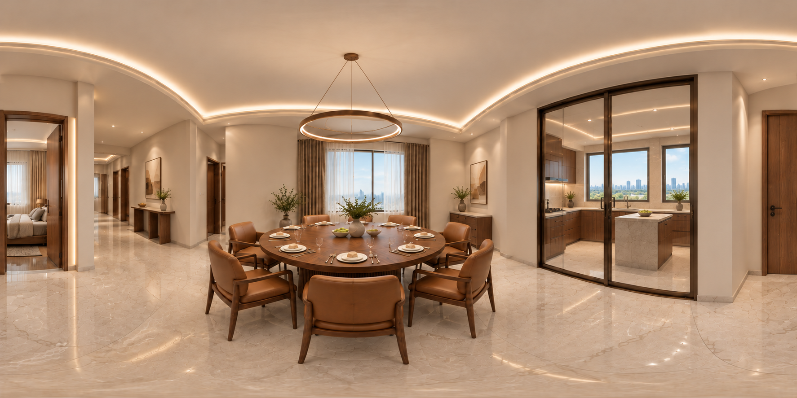

ITALIAN MODERN · DESIGN REVIEW
意式现代 · 11层餐厅与封闭厨房
户型修正样图
围绕餐厨门墙分隔、厨房内部小备餐台与外窗关系进行调整。
内置生成 1774×887 · 风格预览 · 未达4K接缝及极区待校正，未达高清VR验收；以原户型图和实测为准。


平面依据与本次调整
按原户型的厨房边界恢复门墙分隔，小备餐台放在厨房内部，两处外窗保留表达。
图纸标注 M2427 · 2400 × 2700 mm 为结构洞口尺寸。该数值来自图纸，生成样图未作尺寸测量验收。
样图用于核对设计方向，门窗位置、尺寸和施工做法仍以原户型图及现场实测为准。
意式现代材质方向
胡桃木柜体与木饰面、焦糖色皮革餐椅、暖米白石材质感台面，配合铝合金与安全玻璃门窗表达。
材质为设计表达，具体颜色、触感和构造以实物选样与施工确认为准。